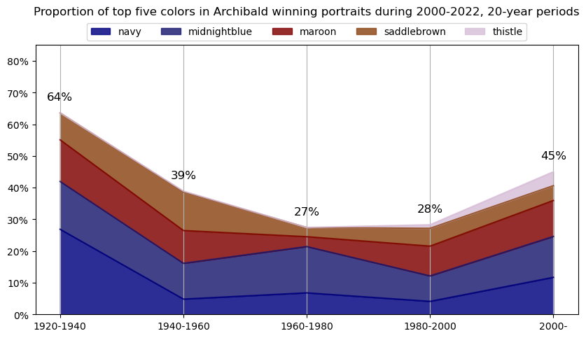
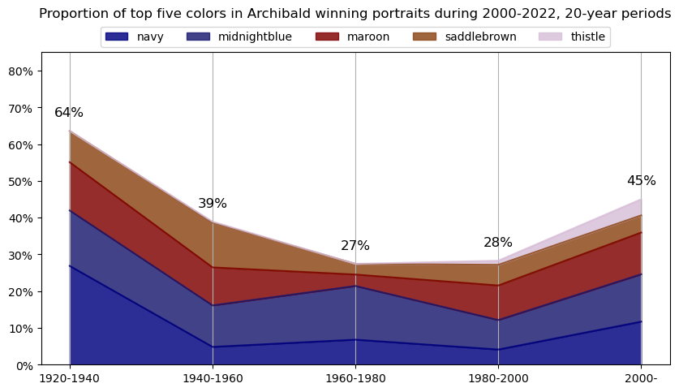

Archibald Prize
Contents
Archibald Prize¶
This is an exploratory data analysis of collected data from Art Gallery NSW among other external sources. We focus on the Archibald Prize and take a deep dive into temporal trends relating to gender, portrait characteristics and career paths. Data ranges over 100 years (1921-2022).
The data consists of…
participation records
prize money records
image data of winning potraits
basic biographical data for winners
Import packages and pre-process data¶
import pandas as pd
import numpy as np
from collections import Counter
import matplotlib.pyplot as plt
import matplotlib.ticker as mtick
from matplotlib.ticker import StrMethodFormatter
from webcolors import CSS3_NAMES_TO_HEX
import seaborn as sns
from os import listdir
from os.path import isfile, join
from PIL import Image
from PIL.ImageStat import Stat
import math
import requests
from bs4 import BeautifulSoup
from os.path import basename
########### 1. Collect data from the Art Gallery of NSW website ###########
# global mainURL
# mainURL = 'https://www.artgallery.nsw.gov.au/'
# def assort_prize_metadata(text):
# prize_dict = dict({'Entries':'',
# 'Presenting partner':'',
# 'Sponsor':'',
# 'Exhibition dates':'',
# 'Misc.':'',
# 'Text':''})
# for t in text:
# for k in list(prize_dict.keys())[:-2]:
# if k in t:
# if ' ' not in t: prize_dict[k] = t.strip().replace(k + ': ','')
# else:
# prize_dict[k] = t.split(' ')[0]
# prize_dict['Text'] = t.split(prize_dict[k])[1]
# break
# if prize_dict['Text'] == '':
# prize_dict['Misc.'] = text[-1].split(' ')[0]
# if len(prize_dict['Misc.']):
# prize_dict['Text'] = text[-1].split(prize_dict['Misc.'])[1]
# return prize_dict
# def collect_records(prize = 'archibald', prize_year = 1921):
# prize_url = mainURL + "prizes/" + prize + '/' + str(prize_year)
# page = requests.get(prize_url)
# soup = BeautifulSoup(page.content, "html.parser")
# # fetch winner data
# try:
# winner_artist = soup.find_all("span", class_="card-prizesWinner-artist")[0].text
# winner_title = soup.find_all("span", class_="card-prizesWinner-title")[0].text
# try:
# winner_image = soup.find_all("img", class_="card-prizesWinner-image")[0].get('src')
# with open('ArchibaldWinners/' + str(yr) + '_' + basename(mainURL + winner_image), "wb") as f:
# f.write(requests.get(mainURL + winner_image).content)
# except: winner_image = None
# winner_info = [winner_artist,winner_title,winner_image]
# except:
# winner_info = [None,None,None]
# # download winning image
# # with open(basename(winner_image),"wb") as f: f.write(requests.get(mainURL + winner_image).content)
# # pre-process
# delimiter = '###' # unambiguous string
# for line_break in soup.findAll('br'): # loop through line break tags
# line_break.replaceWith(delimiter) # replace br tags with delimiter
# textModule = soup.find("div", class_="grid text").get_text().split(delimiter) # get list of strings
# # fetch prize metadata
# prize_metadata_dict = assort_prize_metadata(text=textModule)
# prize_metadata_dict['winner_info'] = winner_info
# # fetch participant data
# participants = []
# if len(soup.find_all("div", class_="grid text")) > 1:
# for item in soup.find_all("div", class_="grid text")[1].find_all('ul')[0].find_all('li'):
# try: participant_href = item.find_all("a")[0].get('href')
# except: participant_href = ''
# participant_artist = item.find_all("strong")[0].text
# participant_title = item.find_all("em")[0].text
# try: participant_label = item.text.split(participant_title)[-1].strip()
# except: participant_label = ''
# participants.append([participant_href, participant_artist, participant_title, participant_label])
# else:
# for item in soup.find_all("div", class_="artworksList-item"):
# participant_href = item.find_all("a", class_="card-artwork-link")[0].get('href')
# participant_artist = item.find_all("span", class_="card-artwork-artist")[0].text
# participant_title = item.find_all("span", class_="card-artwork-title")[0].text
# participant_label = item.find_all("p", class_="card-artwork-label")[0].text
# participants.append([participant_href, participant_artist, participant_title, participant_label])
# prize_metadata_dict['participant_info'] = participants
# return prize_metadata_dict
# archibald_data_dict = dict({'Prize Data':[],'Year':[]})
# # pre 1991/92
# for yr in range(1921,1991):
# try: archibald_data_dict['Prize Data'].append(
# collect_records(prize = 'archibald', prize_year = yr))
# except: archibald_data_dict['Prize Data'].append(None)
# archibald_data_dict['Year'].append(yr)
# # 1991/92 exception
# try: archibald_data_dict['Prize Data'].append(
# collect_records(prize = 'archibald', prize_year = '1991-92'))
# except: archibald_data_dict['Prize Data'].append(None)
# archibald_data_dict['Year'].append('1992')
# # post 1991/92
# for yr in range(1993,2023):
# try: archibald_data_dict['Prize Data'].append(
# collect_records(prize = 'archibald', prize_year = yr))
# except: archibald_data_dict['Prize Data'].append(None)
# archibald_data_dict['Year'].append(yr)
########### Convert dictionary as dataframe and write as csv file ###########
# archies = pd.DataFrame(archibald_data_dict)
# archies.to_csv('data/archies.csv', index=False)
########### Read csv file as dataframe ###########
# this imported dataset was further preprocessed by filtering on winners
# and adding columns in regard to each winner's biographical information
# along with corresponding ANZSCO classification data
archies = pd.read_csv('data/archies.csv')
# We show a transposed of the first three rows of the dataframe
archies.head(3).T
| 0 | 1 | 2 | |
|---|---|---|---|
| YEAR | 1921 | 1922 | 1923 |
| WINNER | W B McInnes | W B McInnes | W B McInnes |
| GENDER | Male | Male | Male |
| DOB | 1889.0 | 1889.0 | 1889.0 |
| DOD | 1939.0 | 1939.0 | 1939.0 |
| PORTRAIT TITLE | Desbrowe Annear | Professor Harrison Moore | Portrait of a lady |
| PORTRAIT GENDER | Male | Male | Female |
| PORTRAIT OCC (Copy/Paste) | NaN | constitutional lawyer and dean of the law facu... | artist Violet McInnes |
| OCC. CATEGORY (1) | Architect | Lawyer / Academic | Artist |
| OCC. CATEGORY (2) | Architect | Lawyer | Artist |
| ANZSCO_1 | Design, Engineering, Science and Transport Pro... | Legal, Social and Welfare Professionals | Arts and Media Professionals |
| ANZSCO_2 | Professionals | Professionals | Professionals |
Gender distribution¶
Male and female distribution for Archibald winners¶
We use a donut chart to explore how gender has been recorded for Archibald winners; 88% of the data has been recorded as Male and 12% as Female.
It should be noted that for three years (1964, 1980 and 1991), there were no Archibald prize winners.
## Gender Proportion
df_gender=pd.DataFrame(dict(Counter(archies["GENDER"])).items(),
columns=["Gender","Frequency"])
# explosion
explode = (0.05, 0.05)
# Pie Chart
plt.pie(df_gender[~df_gender.Gender.isnull()]['Frequency'], labels=['Male','Female'],
autopct='%1.1f%%', pctdistance=0.85,
explode=explode)
# draw circle
centre_circle = plt.Circle((0, 0), 0.70, fc='white')
fig = plt.gcf()
# Adding Circle in Pie chart
fig.gca().add_artist(centre_circle)
# Adding Title of chart
plt.title('Gender proportion')
# Displaying Chart
plt.show()
Male and female distribution of sitters for winning Archibald portraits¶
Beyond the winning painter, we also assess the gender distribution of the sitters within the winning portraits Again we use a donut chart to explore the distribution. According data collected from various online sources, we found that 82% of sitters were recorded as Male, and 18% as Female.
## Gender Proportion
df_gender=pd.DataFrame(dict(Counter(archies["PORTRAIT GENDER"])).items(),
columns=["Gender","Frequency"])
# explosion
explode = (0.05, 0.05)
# Pie Chart
plt.pie(df_gender[~df_gender.Gender.isnull()]['Frequency'], labels=['Male','Female'],
autopct='%1.1f%%', pctdistance=0.85,
explode=explode)
# draw circle
centre_circle = plt.Circle((0, 0), 0.70, fc='white')
fig = plt.gcf()
# Adding Circle in Pie chart
fig.gca().add_artist(centre_circle)
# Adding Title of chart
plt.title('Gender proportion')
# Displaying Chart
plt.show()
Do males paint males?¶
We also consider the gender distribution of sitters by male and female Archibald winners. The clustered bar chart shows that 86% of winning portraits painted by males consisted of male sitters. This differs quite a bit to winning portraits painted by females, which consists of an even distribution (50% male sitters, 50% female sitters). It should be noted that there are 12 winning portraits painted by females.
ax = pd.crosstab(archies['GENDER'], archies['PORTRAIT GENDER'], normalize='index')\
.plot(kind='bar', rot=0)
# Get bar heights for each bar in the plot
bar_heights = [p.get_height() for p in ax.patches]
# For each bar, add the label with rounded value
for i, b in enumerate(ax.patches):
ax.text(b.get_x() + b.get_width()/2,
b.get_height() + 0.01,
str(round(round(bar_heights[i], 2)*100,2)) + '%',
ha='center')
plt.show()
Across winning portraits, it is 36% more likely that a sitter will be female if the painter is female.
Male and female distribution over time¶
The two time series visualisations below showcase the number of Archibald winners and sitters across twenty-year brackets. The data for Archibald winners reveals that only in recent decades have females won a higher proportion of Archibald prizes in comparison to their corresponding vicennium. The trend for sitters also shares a similar pattern to the Archibald winners time series. Following our previous insights, this suggests that as more female artists win Archibalds, there is a corresponding increase in the number of female sitters being painted.
### create a new column for the year of the vicennium
archies['year_vicennium'] = [ int(np.floor(int(year)/20) * 20)
for year in np.array(archies['YEAR'])]
archies['year_vicennium'] = np.where(archies['year_vicennium'] == 2020, 2000, archies['year_vicennium'])
### get count by gender
males_tab = archies[archies['GENDER'] == 'Male']['year_vicennium']\
.value_counts()\
.reset_index()\
.sort_values('index')
females_tab = archies[archies['GENDER'] == 'Female']['year_vicennium']\
.value_counts()\
.reset_index()\
.sort_values('index')
males_sitters_tab = archies[archies['PORTRAIT GENDER'] == 'Male']['year_vicennium']\
.value_counts()\
.reset_index()\
.sort_values('index')
females_sitters_tab = archies[archies['PORTRAIT GENDER'] == 'Female']['year_vicennium']\
.value_counts()\
.reset_index()\
.sort_values('index')
### merge tables and get row proportions for Males and Females
count_by_gender = pd.merge(males_tab, females_tab, on='index', how='outer').fillna(0)
count_by_gender.columns = ['Vicennium', 'Males', 'Females']
count_by_gender['Females_Prop'] = round(count_by_gender['Females']/(count_by_gender['Females'] + count_by_gender['Males']),2)
count_by_gender['Males_Prop'] = round(count_by_gender['Males']/(count_by_gender['Females'] + count_by_gender['Males']),2)
count_by_gender_sitter = pd.merge(males_sitters_tab, females_sitters_tab, on='index', how='outer').fillna(0)
count_by_gender_sitter.columns = ['Vicennium', 'Males', 'Females']
count_by_gender_sitter['Females_Prop'] = round(count_by_gender_sitter['Females']/(count_by_gender_sitter['Females'] + count_by_gender_sitter['Males']),2)
count_by_gender_sitter['Males_Prop'] = round(count_by_gender_sitter['Males']/(count_by_gender_sitter['Females'] + count_by_gender_sitter['Males']),2)
### plot gender proportions of winners over time
fig, ax = plt.subplots(figsize=(10, 6))
plt.plot(count_by_gender['Vicennium'],
count_by_gender['Males_Prop'],
label="Males", marker='o')
plt.plot(count_by_gender['Vicennium'],
count_by_gender['Females_Prop'],
label="Females", marker='o')
for i, txt in enumerate(count_by_gender['Males_Prop']):
ax.annotate(str(int(round(txt*100,0)))+ '%', (count_by_gender['Vicennium'][i],
count_by_gender['Males_Prop'][i]*1.035),
ha='center', va='bottom', size=12.5)
for i, txt in enumerate(count_by_gender['Females_Prop']):
ax.annotate(str(int(round(txt*100,0)))+ '%', (count_by_gender['Vicennium'][i],
count_by_gender['Females_Prop'][i]*1.1),
ha='center', va='bottom', size=12.5)
# adjust legend
ax.legend(loc="upper right", ncol=2)
ax.yaxis.set_ticklabels([])
ax.yaxis.set_ticks([])
plt.xlabel('')
plt.ylim([-0.1, 1.23])
plt.grid(axis='x')
plt.xticks([1920,1940,1960,1980,2000], ['1920-1940', '1940-1960', '1960-1980','1980-2000', '2000-'])
plt.title('Proportion of Archibald winners,\nMales and Females, 20-year periods')
plt.show()
### plot gender proportions of sitters over time
fig, ax = plt.subplots(figsize=(10, 6))
plt.plot(count_by_gender_sitter['Vicennium'],
count_by_gender_sitter['Males_Prop'],
label="Males", marker='o')
plt.plot(count_by_gender_sitter['Vicennium'],
count_by_gender_sitter['Females_Prop'],
label="Females", marker='o')
for i, txt in enumerate(count_by_gender_sitter['Males_Prop']):
ax.annotate(str(int(round(txt*100,0)))+ '%', (count_by_gender_sitter['Vicennium'][i],
count_by_gender_sitter['Males_Prop'][i]*1.035),
ha='center', va='bottom', size=12.5)
for i, txt in enumerate(count_by_gender_sitter['Females_Prop']):
ax.annotate(str(int(round(txt*100,0)))+ '%', (count_by_gender_sitter['Vicennium'][i],
count_by_gender_sitter['Females_Prop'][i]*1.09),
ha='center', va='bottom', size=12.5)
# adjust legend
ax.legend(loc="upper right", ncol=2)
ax.yaxis.set_ticklabels([])
ax.yaxis.set_ticks([])
plt.xlabel('')
plt.ylim([-0.1, 1.23])
plt.grid(axis='x')
plt.xticks([1920,1940,1960,1980,2000], ['1920-1940', '1940-1960', '1960-1980','1980-2000', '2000-'])
plt.title('Proportion of sitters,\nMales and Females, 20-year periods')
plt.show()
### merge tables and get row proportions for Males and Females
count_by_gender = pd.merge(males_tab, females_tab, on='index', how='outer').fillna(0)
count_by_gender.columns = ['Vicennium', 'Males', 'Females']
count_by_gender['Females_Prop'] = round(count_by_gender['Females']/(count_by_gender['Females'] + count_by_gender['Males']),2)
count_by_gender['Males_Prop'] = round(count_by_gender['Males']/(count_by_gender['Females'] + count_by_gender['Males']),2)
count_by_gender_sitter = pd.merge(males_sitters_tab, females_sitters_tab, on='index', how='outer').fillna(0)
count_by_gender_sitter.columns = ['Vicennium', 'Males', 'Females']
count_by_gender_sitter['Females_Prop'] = round(count_by_gender_sitter['Females']/(count_by_gender_sitter['Females'] + count_by_gender_sitter['Males']),2)
count_by_gender_sitter['Males_Prop'] = round(count_by_gender_sitter['Males']/(count_by_gender_sitter['Females'] + count_by_gender_sitter['Males']),2)
### plot gender proportions of winners over time
fig, ax = plt.subplots(figsize=(10, 6))
plt.plot(count_by_gender['Vicennium'],
count_by_gender['Males_Prop'],
label="Males", marker='o')
plt.plot(count_by_gender['Vicennium'],
count_by_gender['Females_Prop'],
label="Females", marker='o')
for i, txt in enumerate(count_by_gender['Males_Prop']):
ax.annotate(str(int(round(txt*100,0)))+ '%', (count_by_gender['Vicennium'][i],
count_by_gender['Males_Prop'][i]*1.035),
ha='center', va='bottom', size=12.5)
for i, txt in enumerate(count_by_gender['Females_Prop']):
ax.annotate(str(int(round(txt*100,0)))+ '%', (count_by_gender['Vicennium'][i],
count_by_gender['Females_Prop'][i]*1.1),
ha='center', va='bottom', size=12.5)
# adjust legend
ax.legend(loc="upper right", ncol=2)
ax.yaxis.set_ticklabels([])
ax.yaxis.set_ticks([])
plt.xlabel('')
plt.ylim([-0.1, 1.23])
plt.grid(axis='x')
plt.xticks([1920,1940,1960,1980,2000], ['1920-1940', '1940-1960', '1960-1980','1980-2000', '2000-'])
plt.title('Proportion of Archibald winners,\nMales and Females, 20-year periods')
plt.show()
### plot gender proportions of sitters over time
fig, ax = plt.subplots(figsize=(10, 6))
plt.plot(count_by_gender_sitter['Vicennium'],
count_by_gender_sitter['Males_Prop'],
label="Males", marker='o')
plt.plot(count_by_gender_sitter['Vicennium'],
count_by_gender_sitter['Females_Prop'],
label="Females", marker='o')
for i, txt in enumerate(count_by_gender_sitter['Males_Prop']):
ax.annotate(str(int(round(txt*100,0)))+ '%', (count_by_gender_sitter['Vicennium'][i],
count_by_gender_sitter['Males_Prop'][i]*1.035),
ha='center', va='bottom', size=12.5)
for i, txt in enumerate(count_by_gender_sitter['Females_Prop']):
ax.annotate(str(int(round(txt*100,0)))+ '%', (count_by_gender_sitter['Vicennium'][i],
count_by_gender_sitter['Females_Prop'][i]*1.09),
ha='center', va='bottom', size=12.5)
# adjust legend
ax.legend(loc="upper right", ncol=2)
ax.yaxis.set_ticklabels([])
ax.yaxis.set_ticks([])
plt.xlabel('')
plt.ylim([-0.1, 1.23])
plt.grid(axis='x')
plt.xticks([1920,1940,1960,1980,2000], ['1920-1940', '1940-1960', '1960-1980','1980-2000', '2000-'])
plt.title('Proportion of sitters,\nMales and Females, 20-year periods')
plt.show()
Winning age for Archibald winners¶
We use a histogram chart to explore the distribution of winning age. The histogram exhibits a relatively bi-modal shape with some painters winning the Archibald prize much later in their career. However, the majority cluster around the mid-40s.
The youngest painter to win the Archibald Prize was Nora Heysen at the age of 27 years (1938) and the oldest being John Olsen wininng at the age of 77 years (2005).
Furthermore, we calculate the median winning age by gender of winning painter, and found that males (45) on average win later than females (39).
def upper_rugplot(data, height=.05, ax=None, **kwargs):
from matplotlib.collections import LineCollection
ax = ax or plt.gca()
kwargs.setdefault("linewidth", 1)
segs = np.stack((np.c_[data, data],
np.c_[np.ones_like(data), np.ones_like(data)-height]),
axis=-1)
lc = LineCollection(segs, transform=ax.get_xaxis_transform(), **kwargs)
ax.add_collection(lc)
archies['winning_age'] = archies['YEAR'] - archies['DOB']
# print(pd.DataFrame(archies.winning_age.describe()).T,'')
# print(pd.DataFrame(archies[archies['GENDER'] == 'Male']['winning_age'].describe()).T)
# print(pd.DataFrame(archies[archies['GENDER'] == 'Female']['winning_age'].describe()).T)
sns.kdeplot(archies['winning_age'], fill=True)
upper_rugplot(archies['winning_age'], height=.05, alpha=.8)
plt.title('Distribution of winning age, Median = 44')
plt.ylim([0, 0.04])
plt.xlabel('Winning Age')
plt.show()
Winning age by year¶
The first line plot below shows the age of Archibald winners per year. At first glance, the winning age appears to fluctuate randomly, but there are some observable patterns prior to 1960. Upon closer examination, we discover that these gradual changes are the result of the same individuals winning the Archibald Prize multiple times.
We list five of the most frequent Archibald winners - all of which have more than three prizes.
Artist |
Number of Archibald prizes |
|---|---|
William Dargie |
8 |
W B McInnes |
7 |
John Longstaff |
5 |
Ivor Hele |
5 |
William Pidgeon |
4 |
The second line plot emphasises on these five artists, highlighting some interesting insights.
The first 41 years of the Archibald prize were dominated by these multi-winners, specifcally winning more than two thirds (68.3%) of Archibald wins
W B McInnes and John Longstaff dominated the 1920-1940 period, collectively winning 12 out 19 Archibalds
William Dargie and Ivor Hele dominated the 1940-1960 period, collectively winning 13 out 20 Archibalds
We see a lot more distribution amongst painters in recent decades, with less occurence of repeat winners.
### plot winning age by year
fig, ax = plt.subplots(figsize=(10, 6))
plt.plot(archies['YEAR'], archies['winning_age'], alpha=0.35)
plt.plot(archies['YEAR'], archies['winning_age'],
marker='o', linestyle='', color='tab:blue')
plt.axhline(y=44, color='red', linestyle='--', lw=1.5, alpha=0.3)
plt.ylim([20, 90])
plt.title('Age at time of Archibald Prize win by year, Median = 44')
plt.show()
############################################
### plot winning age by year and highlight multi-winners
fig, ax = plt.subplots(figsize=(10, 6))
plt.plot(archies['YEAR'], archies['winning_age'], alpha=0.35)
plt.axhline(y=44, color='red', linestyle='--', lw=1.5, alpha=0.3)
### William Dargie
cond = (archies['WINNER'] == 'William Dargie')
plt.plot(archies[cond]['YEAR'], archies[cond]['winning_age'],
marker='o', linestyle='', color='tab:orange', label='William Dargie')
### W B McInnes
cond2 = (archies['WINNER'] == 'W B McInnes')
plt.plot(archies[cond2]['YEAR'], archies[cond2]['winning_age'],
marker='o', linestyle='', color='tab:purple', label='W B McInnes')
### John Longstaff
cond3 = (archies['WINNER'] == 'John Longstaff')
plt.plot(archies[cond3]['YEAR'], archies[cond3]['winning_age'],
marker='o', linestyle='', color='tab:pink', label='John Longstaff')
### Ivor Hele
cond4 = (archies['WINNER'] == 'Ivor Hele')
plt.plot(archies[cond4]['YEAR'], archies[cond4]['winning_age'],
marker='o', linestyle='', color='tab:green', label='Ivor Hele')
### William Pidgeon
cond5 = (archies['WINNER'] == 'William Pidgeon')
plt.plot(archies[cond5]['YEAR'], archies[cond5]['winning_age'],
marker='o', linestyle='', color='tab:red', label='William Pidgeon')
cond_rest = (archies['WINNER'] != 'William Dargie') & (archies['WINNER'] != 'W B McInnes') & \
(archies['WINNER'] != 'John Longstaff') & (archies['WINNER'] != 'Ivor Hele') & \
(archies['WINNER'] != 'William Pidgeon')
plt.plot(archies[cond_rest]['YEAR'], archies[cond_rest]['winning_age'],
marker='o', linestyle='', color='tab:blue', label='Rest of winners')
# adjust legend
ax.legend(loc="upper right", ncol=3)
plt.title('Age at time of Archibald Prize win by year,\n\n')
# add subtitle
plt.text(0.5, 1.05, 'Artists who have won the Archibald Prize more than thrice are highlighted',
horizontalalignment='center', verticalalignment='center',
transform=ax.transAxes, fontsize=10)
plt.ylim([20, 90])
plt.show()
Winning age for Archibald winners (cont.)¶
To consider multi-winners, we assess the average winning age at different milestones in relation to the Archibald Prize (1st win, 2nd winm, etc.). The bar plot shows a similar average (43.5) for first-time winners (highlighted in orange) when compared with the overall median (44). This is likely due to the fact that most artists have only won the prize once (62 artists).
When considering second wins, the average winning age increases to 48.5, but then decreases for subsequent wins. This pattern may be a result of small sample sizes, but also suggests that multi-winners tend to experience early success. The only exception is John Longstaff, who won all his prizes after the age of 64.
Interestingly, William Dargie, who won his eighth and final Archibald Prize, was 44 years old, which is the same as the overall median winning age.
### plot winning age at different milestones
archies['count'] = 0
# create count for each artist
winner_count_dict = dict()
for idx,row in archies.sort_values('YEAR')['WINNER'].iteritems():
if row not in winner_count_dict:
archies.loc[idx,'count'] = 1
winner_count_dict[row] = 1
else:
winner_count_dict[row] = winner_count_dict[row] + 1
archies.loc[idx,'count'] = winner_count_dict[row]
x = [1,2,3,4,5,6,7,8]
y = [
archies[archies['count'] == 1]['winning_age'].median(),
archies[archies['count'] == 2]['winning_age'].median(),
archies[archies['count'] == 3]['winning_age'].median(),
archies[archies['count'] == 4]['winning_age'].median(),
archies[archies['count'] == 5]['winning_age'].median(),
archies[archies['count'] == 6]['winning_age'].median(),
archies[archies['count'] == 7]['winning_age'].median(),
archies[archies['count'] == 8]['winning_age'].median()
]
fig, ax = plt.subplots()
ax.bar(x, y)
ax.bar(x[0], y[0], color='tab:orange')
ax.set_xlabel('Archibald Prize wins')
ax.set_title('Median winning age at different milestones,\n\n')
# add subtitle
plt.text(0.5, 1.05, 'Frequency of winners highlighted in white',
horizontalalignment='center', verticalalignment='center',
transform=ax.transAxes, fontsize=10)
plt.ylim([0, 55])
omit_nowins = (~archies.winning_age.isnull())
for i, v in enumerate(y):
ax.annotate(str(v), (i+1,v*1.005), ha='center', va='bottom', size=11)
ax.annotate(archies[(archies['count'] == i+1) & omit_nowins].shape[0],
(i+1,2), ha='center', va='bottom', size=11, color='white')
plt.show()
/var/folders/rb/mjsh2q916fl5sgghntjck66h0000gn/T/ipykernel_61536/2270394203.py:6: FutureWarning: iteritems is deprecated and will be removed in a future version. Use .items instead.
for idx,row in archies.sort_values('YEAR')['WINNER'].iteritems():
# def upper_rugplot(data, height=.05, ax=None, **kwargs):
# from matplotlib.collections import LineCollection
# ax = ax or plt.gca()
# kwargs.setdefault("linewidth", 1)
# segs = np.stack((np.c_[data, data],
# np.c_[np.ones_like(data), np.ones_like(data)-height]),
# axis=-1)
# lc = LineCollection(segs, transform=ax.get_xaxis_transform(), **kwargs)
# ax.add_collection(lc)
# sns.set_theme(style="white", rc={"axes.facecolor": (0, 0, 0, 0), 'axes.linewidth':2})
# palette = sns.color_palette("Paired", 8)
# archies_density = archies[archies['count'] < 9].copy()
# archies_density['count_verbose'] = np.where(archies_density['count'] == 1, '1st win', np.nan)
# archies_density['count_verbose'] = np.where(archies_density['count'] == 2, '2nd win', archies_density['count_verbose'])
# archies_density['count_verbose'] = np.where(archies_density['count'] == 3, '3rd win', archies_density['count_verbose'])
# archies_density['count_verbose'] = np.where(archies_density['count'] == 4, '4th win', archies_density['count_verbose'])
# archies_density['count_verbose'] = np.where(archies_density['count'] == 5, '5th win', archies_density['count_verbose'])
# archies_density['count_verbose'] = pd.Categorical(archies_density['count_verbose'],
# categories=['5th win','4th win','3rd win','2nd win','1st win'], ordered=True)
# g = sns.FacetGrid(archies_density, palette=palette, row="count_verbose", hue="count_verbose", aspect=8, height=1.2)
# g.map_dataframe(sns.kdeplot, x="winning_age", fill=True, alpha=0.9)
# g.map_dataframe(sns.kdeplot, x="winning_age", color='black')
# upper_rugplot(archies_density[archies_density['count'] == 8]['winning_age'], color=palette[7], linewidth=2.75, height=0.24, ax=g.axes[1,0])
# upper_rugplot(range(25,85), color='white', linewidth=3, height=.21, ax=g.axes[1,0])
# upper_rugplot(archies_density[archies_density['count'] == 7]['winning_age'], color=palette[6], linewidth=2.75, height=0.21, ax=g.axes[1,0])
# upper_rugplot(range(25,85), color='white', linewidth=3, height=.18, ax=g.axes[1,0])
# upper_rugplot(archies_density[archies_density['count'] == 6]['winning_age'], color=palette[5], linewidth=2.75, height=0.18, ax=g.axes[1,0])
# upper_rugplot(range(25,85), color='white', linewidth=3, height=.15, ax=g.axes[1,0])
# upper_rugplot(archies_density[archies_density['count'] == 5]['winning_age'], color=palette[0], linewidth=2.75, height=0.15, ax=g.axes[1,0])
# upper_rugplot(range(25,85), color='white', linewidth=3, height=.12, ax=g.axes[1,0])
# upper_rugplot(archies_density[archies_density['count'] == 4]['winning_age'], color=palette[1], linewidth=2.75, height=.12, ax=g.axes[1,0])
# upper_rugplot(range(25,85), color='white', linewidth=3, height=.09, ax=g.axes[1,0])
# upper_rugplot(archies_density[archies_density['count'] == 3]['winning_age'], color=palette[2], linewidth=2.75, height=.09, ax=g.axes[1,0])
# upper_rugplot(range(25,85), color='white', linewidth=3, height=.06, ax=g.axes[1,0])
# upper_rugplot(archies_density[archies_density['count'] == 2]['winning_age'], color=palette[3], linewidth=2.75, height=.06, ax=g.axes[1,0])
# upper_rugplot(range(25,85), color='white', linewidth=3, height=.03, ax=g.axes[1,0])
# upper_rugplot(archies_density[archies_density['count'] == 1]['winning_age'], color=palette[4], linewidth=2.75, height=.03, ax=g.axes[1,0])
# def label(x, color, label):
# ax = plt.gca()
# ax.text(0.9, .1, label, color=color, fontsize=13,
# ha="left", va="center", transform=ax.transAxes)
# g.map(label, "count_verbose")
# g.fig.subplots_adjust(hspace=-0.8)
# g.set_titles("")
# g.set(yticks=[], xlabel="", ylabel="", ylim=[0, 0.045])
# g.despine( left=True)
# plt.suptitle('Distribution of winning age at different milestones', x=0.52, y=0.9)
# plt.show()
from IPython.display import Image
Image(filename='images/StackedDensity.png', width=800)
By the time the average participant achieves their first Archibald Prize, William Dargie had already secured his eighth Archibald win.
Winning age for Archibald winners by vicennium¶
By analysing the winning age data by milestone and decade, we can observe that the average winning age for first-time winners has experienced fluctuations over time. During the 1920-1940 period, the median winning age for first-time winners was 35. However, this average rose to 46.5 over the next forty years and then dropped back to 40 in the 2000s. A similar pattern was observed for second-time winners, with a peak median of 60.5 in the 1980-2000 period.
As illustrated in previous visualisations, third-time winners and beyond tend to occur more often in earlier decades. The last artist to win three Archibald prizes was Eric John Smith in 1982 at the age of 63.
fig, ax = plt.subplots(figsize=(9, 5))
### groupby mean age of winners by vicennium
archies[archies['count'] == 1].groupby('year_vicennium')['winning_age'].median().reset_index().\
plot(x='year_vicennium', y='winning_age', marker='o', ax=ax, label='1st win')
archies[archies['count'] == 2].groupby('year_vicennium')['winning_age'].median().reset_index().\
plot(x='year_vicennium', y='winning_age', marker='o',ax=ax, label='2nd win')
archies[archies['count'] == 3].groupby('year_vicennium')['winning_age'].median().reset_index().\
plot(x='year_vicennium', y='winning_age', marker='o',ax=ax, label='3rd win')
archies[archies['count'] > 3].groupby('year_vicennium')['winning_age'].median().reset_index().\
plot(x='year_vicennium', y='winning_age', marker='o',ax=ax, label='4th win & \nbeyond')
ax.set(xlabel="Vicennium", ylabel="")
plt.grid(axis='x')
plt.xticks([1920,1940,1960,1980,2000],
['1920-1940', '1940-1960', '1960-1980','1980-2000', '2000-'])
# plt.title('Average winning age by $\it{n}$th win, 20-year periods')
plt.title('Average winning age by nth win, 20-year periods')
# add legend 2 by 2
plt.legend(facecolor='white', loc='upper right', ncol=1)
plt.show()
Colour and Brightness¶
Colour over time¶
# # Takes 3 minutes to run
# import matplotlib.patches as patches
# import matplotlib.image as mpimg
# from PIL import Image
# from matplotlib.offsetbox import OffsetImage, AnnotationBbox
# # !pip install easydev #version 0.12.0
# # !pip install colormap #version 1.0.4
# # !pip install opencv-python #version 4.5.5.64
# # !pip install colorgram.py #version 1.2.0
# # !pip install extcolors #version 1.0.0
# # !pip install colormath #version 3.0.0
# # !pip install webcolors #version 1.11.1
# import cv2
# import extcolors
# from colormap import rgb2hex
# from colormath.color_objects import sRGBColor, LabColor
# from colormath.color_conversions import convert_color
# from colormath.color_diff import delta_e_cie2000
# import webcolors
# def get_closest_color(requested_color, color_map):
# requested_color = sRGBColor(*requested_color)
# requested_color = convert_color(requested_color, LabColor)
# min_distance = float("inf")
# closest_color = None
# for color_name, color_rgb in color_map.items():
# color = sRGBColor(*color_rgb)
# color = convert_color(color, LabColor)
# distance = delta_e_cie2000(requested_color, color)
# if distance < min_distance:
# min_distance = distance
# closest_color = color_name
# return closest_color
# color_map = {color_name: webcolors.name_to_rgb(color_name) for color_name in webcolors.CSS3_NAMES_TO_HEX.keys()}
# from os import listdir
# from os.path import isfile, join
# onlyfiles = [f for f in listdir('./images/ArchibaldWinners') if isfile(join('./images/ArchibaldWinners', f))]
# def color_to_df(input):
# colors_pre_list = str(input).replace('([(','').split(', (')[0:-1]
# df_rgb = [i.split('), ')[0] + ')' for i in colors_pre_list]
# df_percent = [i.split('), ')[1].replace(')','') for i in colors_pre_list]
# #convert RGB to HEX code
# df_color_up = [rgb2hex(int(i.split(", ")[0].replace("(","")),
# int(i.split(", ")[1]),
# int(i.split(", ")[2].replace(")",""))) for i in df_rgb]
# df = pd.DataFrame(zip(df_color_up, df_percent), columns = ['c_code','occurence'])
# return df
# df_colors = pd.DataFrame(columns = ['c_code','occurence'])
# onlyfiles.sort()
# for f in onlyfiles:
# colors_x = extcolors.extract_from_path('./images/ArchibaldWinners/' + f,
# tolerance = 12, limit = 25)
# df_color = color_to_df(colors_x)
# df_color['proportion'] = df_color['occurence'].astype(float) / df_color['occurence'].astype(float).sum()
# df_color['rank'] = df_color['proportion'].rank(ascending=False)
# df_color['color_name'] = df_color.c_code.\
# apply(lambda x: get_closest_color(webcolors.hex_to_rgb(x), color_map))
# df_color['year'] = f[:4]
# # df_colors = df_colors.append(df_color, ignore_index=True)
# df_colors = pd.concat([df_colors, df_color], ignore_index=True)
# df_colors.to_csv('data/Archibald_colors.csv', index=False)
# Fetch colour data for every Archibald winning potrait
df_colors = pd.read_csv('data/Archibald_colors.csv')
# create a new column for the year in 10 year intervals
df_colors['year_vicennium'] = df_colors['year'].astype(int).apply(lambda x: x - x % 20)
df_colors['year_vicennium'] = np.where(df_colors['year_vicennium'] == 2020, 2000, df_colors['year_vicennium'])
# create a new column for the proportion of colors in each year
len_20_cols = df_colors[df_colors['year_vicennium'] == 1920]['year'].nunique()
len_40_cols = df_colors[df_colors['year_vicennium'] == 1940]['year'].nunique()
len_60_cols = df_colors[df_colors['year_vicennium'] == 1960]['year'].nunique()
len_80_cols = df_colors[df_colors['year_vicennium'] == 1980]['year'].nunique()
len_00_cols = df_colors[df_colors['year_vicennium'] == 2000]['year'].nunique()
df_colors['proportion2'] = np.where(df_colors['year_vicennium'] == 1920, df_colors['proportion']/len_20_cols, np.nan)
df_colors['proportion2'] = np.where(df_colors['year_vicennium'] == 1940, df_colors['proportion']/len_40_cols, df_colors['proportion2'])
df_colors['proportion2'] = np.where(df_colors['year_vicennium'] == 1960, df_colors['proportion']/len_60_cols, df_colors['proportion2'])
df_colors['proportion2'] = np.where(df_colors['year_vicennium'] == 1980, df_colors['proportion']/len_80_cols, df_colors['proportion2'])
df_colors['proportion2'] = np.where(df_colors['year_vicennium'] == 2000, df_colors['proportion']/len_00_cols, df_colors['proportion2'])
for y in df_colors['year_vicennium'].unique():
# get the top 5 colors for each year
top5cols = df_colors[df_colors.year_vicennium == y]\
.groupby(['year_vicennium','color_name'])\
.agg({'proportion2':'sum'}).reset_index()\
.sort_values(['year_vicennium','proportion2'], ascending=[True,False])\
.groupby('year_vicennium')\
.head(5)['color_name'].unique()
df_colors_top5 = df_colors[df_colors.color_name.isin(top5cols)]\
.groupby(['year_vicennium','color_name'])\
.agg({'proportion2':'sum'}).reset_index()\
.sort_values(['year_vicennium','proportion2'], ascending=[True,False])\
.groupby('year_vicennium')\
.head(5)
df_colors_top5_pivot = df_colors_top5\
.pivot(index='year_vicennium', columns='color_name', values='proportion2')\
.fillna(0)
# create a new column for the RGB values of each color
df_colors_top5['red'] = df_colors_top5['color_name']\
.apply(lambda x: int(CSS3_NAMES_TO_HEX[x][1:3], 16))
df_colors_top5['green'] = df_colors_top5['color_name']\
.apply(lambda x: int(CSS3_NAMES_TO_HEX[x][3:5], 16))
df_colors_top5['blue'] = df_colors_top5['color_name']\
.apply(lambda x: int(CSS3_NAMES_TO_HEX[x][5:], 16))
# Define a list of column names to order by
ordered_columns = df_colors_top5\
.sort_values(['red','green','blue'], ascending=[True,True,True])['color_name']\
.unique()
# Reorder the columns
df_colors_top5_pivot = df_colors_top5_pivot.reindex(columns=ordered_columns)
# plot stacked area chart
df_colors_top5_pivot\
.plot.area(stacked=True, figsize=(10,5),
color=df_colors_top5_pivot.columns,
alpha=0.825)
# add labels for sum of proportions for each year
for i,x in enumerate(df_colors_top5_pivot.index):
plt.text(x, df_colors_top5_pivot.iloc[i].sum()+0.05,
f'{df_colors_top5_pivot.iloc[i].sum():.0%}',
ha='center', va='center', fontsize=12)
plt.legend(loc='upper center', ncol=5, bbox_to_anchor=(0.5, 1.1))
# Set the y-axis limts
plt.ylim(0, 0.85)
# Set the y-axis formatter to show percentages
plt.gca().yaxis.set_major_formatter(mtick.PercentFormatter(1.0))
plt.xlabel("")
plt.grid(axis='x')
plt.xticks([1920,1940,1960,1980,2000],
['1920-1940', '1940-1960', '1960-1980','1980-2000', '2000-'])
if y == 2000: plus20 = 2022
else: plus20 = y + 20
plt.title(f'Proportion of top five colors in Archibald winning portraits during {y}-{plus20}, 20-year periods\n\n')
plt.show()

 

top30cols = df_colors\
.groupby(['year_vicennium','color_name'])\
.agg({'proportion2':'sum'}).reset_index()\
.sort_values(['year_vicennium','proportion2'], ascending=[True,False])\
.groupby('year_vicennium')\
.head(5)['color_name'].unique()
top30cols_df = df_colors[df_colors.color_name.isin(top30cols)]\
.groupby(['year_vicennium','color_name'])\
.agg({'proportion2':'sum'}).reset_index()\
.sort_values(['year_vicennium','proportion2'], ascending=[True,False])\
.groupby('year_vicennium')\
.head(100)
# plot the top 30 colors for each year as time series
fig, ax = plt.subplots(figsize=(8,6))
# line plot with markers at start and end of each line
sns.lineplot(x='year_vicennium', y='proportion2', hue='color_name', data=top30cols_df,
palette=sns.color_palette(top30cols_df.color_name.unique(), len(top30cols)), ax=ax,
alpha=0.6, linewidth=2.5)
# plot start and end markers
sns.scatterplot(x='year_vicennium', y='proportion2', hue='color_name',
data=top30cols_df[(top30cols_df.year_vicennium == 1920) | (top30cols_df.year_vicennium == 2000)],
palette=sns.color_palette(top30cols_df.color_name.unique(), len(top30cols)), ax=ax,
s=50, marker='o', legend=False)
# no legend
ax.legend().remove()
ax.set_title('Top colours over time')
ax.set_xlabel('')
ax.set_ylabel('')
plt.grid(axis='x', alpha=0.5)
plt.ylim(-.0275, 0.3)
plt.xticks([1905, 1920,1940,1960,1980,2000, 2012],
['','1920-1940', '1940-1960', '1960-1980','1980-2000', '2000-',''])
# add annotation of color_name for each marker
ax.annotate('navy', (1913, 0.257), textcoords="offset points", xytext=(0,10), ha='center', size=12, color='navy')
ax.annotate('midnight\nblue', (1913, 0.14), textcoords="offset points", xytext=(0,10), ha='center', size=12, color='midnightblue')
ax.annotate('maroon', (1913, 0.12), textcoords="offset points", xytext=(0,10), ha='center', size=12, color='maroon')
ax.annotate('saddle\nbrown', (1913, 0.07), textcoords="offset points", xytext=(0,10), ha='center', size=12, color='saddlebrown')
ax.annotate('black', (1913, 0.055), textcoords="offset points", xytext=(0,10), ha='center', size=12, color='black')
ax.annotate('olive', (2006, 0.015), textcoords="offset points", xytext=(0,10), ha='center', size=12, color='olive')
ax.annotate('dark\ngreen', (1913, -0.0275), textcoords="offset points", xytext=(0,10), ha='center', size=12, color='darkgreen')
ax.annotate('peru', (1913, 0.01), textcoords="offset points", xytext=(0,10), ha='center', size=12, color='peru')
ax.annotate('tan', (1913, 0.027), textcoords="offset points", xytext=(0,10), ha='center', size=12, color='tan')
ax.annotate('sienna', (1913, -.0025), textcoords="offset points", xytext=(0,10), ha='center', size=12, color='sienna')
ax.annotate('thistle', (2006.5, 0.0325), textcoords="offset points", xytext=(0,10), ha='center', size=12, color='thistle')
ax.annotate('dark\nslate\ngray', (2006.5, -0.025), textcoords="offset points", xytext=(0,10), ha='center', size=12, color='darkslategray')
# show plot
plt.show()

Brightness over time¶
# def brightness( im_file ):
# im = Image.open(im_file)
# stat = Stat(im)
# r,g,b = stat.mean
# return math.sqrt(0.299*(r**2) + 0.587*(g**2) + 0.114*(b**2))
# onlyfiles = [f for f in listdir('./images/ArchibaldWinners') if isfile(join('./images/ArchibaldWinners', f))]
# # sort image files in decade dictionary
# images_df = pd.DataFrame(onlyfiles)
# images_df['year'] = images_df[0].apply(lambda x: int(x.split('_')[0]))
# images_df.loc[images_df[0] == '1990_SID78808M.jpg.641x900_q85.jpg','year'] = 1991
# images_df['decade'] = [ int(np.floor(int(year)/10) * 10)
# for year in np.array(images_df["year"])]
# images_df['brightness'] = images_df[0].apply(lambda x: brightness('./images/ArchibaldWinners/' + x))
# # create figure
# fig = plt.figure(figsize=(14, 8))
# ax = plt.axes()
# peaks = images_df[images_df['year'].isin([1921,1930,1936,1942,1947,1956,
# 1965, 1966,1978,1989,
# 2001,2002,2006,2014,2015,2022])]
# ax.plot(images_df.sort_values('year')['year'],
# images_df.sort_values('year')['brightness'])
# ax.plot(peaks.sort_values('year')['year'],
# peaks.sort_values('year')['brightness'], "o", color='#1f77b4')
# # Draw image
# arr_image = plt.imread('./images/ArchibaldWinners/' + \
# images_df[images_df.year == 1936].iloc[0][0], format='jpg')
# axin = ax.inset_axes([1926,136,15,55],transform=ax.transData) # create new inset axes in data coordinates
# axin.imshow(arr_image)
# axin.axis('off')
# arr_image = plt.imread('./images/ArchibaldWinners/' + \
# images_df[images_df.year == 1942].iloc[0][0], format='jpg')
# axin = ax.inset_axes([1935,163,15,55],transform=ax.transData) # create new inset axes in data coordinates
# axin.imshow(arr_image)
# axin.axis('off')
# arr_image = plt.imread('./images/ArchibaldWinners/' + \
# images_df[images_df.year == 1956].iloc[0][0], format='jpg')
# axin = ax.inset_axes([1948,165,15,55],transform=ax.transData) # create new inset axes in data coordinates
# axin.imshow(arr_image)
# axin.axis('off')
# arr_image = plt.imread('./images/ArchibaldWinners/'+ \
# images_df[images_df.year == 1966].iloc[0][0], format='jpg')
# axin = ax.inset_axes([1961,165,15,55],transform=ax.transData) # create new inset axes in data coordinates
# axin.imshow(arr_image)
# axin.axis('off')
# arr_image = plt.imread('./images/ArchibaldWinners/' + \
# images_df[images_df.year == 1989].iloc[0][0], format='jpg')
# axin = ax.inset_axes([1982,199,15,55],transform=ax.transData) # create new inset axes in data coordinates
# axin.imshow(arr_image)
# axin.axis('off')
# arr_image = plt.imread('./images/ArchibaldWinners/' + \
# images_df[images_df.year == 1978].iloc[0][0], format='jpg')
# axin = ax.inset_axes([1970,195,15,55],transform=ax.transData) # create new inset axes in data coordinates
# axin.imshow(arr_image)
# axin.axis('off')
# arr_image = plt.imread('./images/ArchibaldWinners/' + \
# images_df[images_df.year == 2002].iloc[0][0], format='jpg')
# axin = ax.inset_axes([1994,210,15,55],transform=ax.transData) # create new inset axes in data coordinates
# axin.imshow(arr_image)
# axin.axis('off')
# arr_image = plt.imread('./images/ArchibaldWinners/' + \
# images_df[images_df.year == 2014].iloc[0][0], format='jpg')
# axin = ax.inset_axes([2007,205,15,55],transform=ax.transData) # create new inset axes in data coordinates
# axin.imshow(arr_image)
# axin.axis('off')
# arr_image = plt.imread('./images/ArchibaldWinners/' + \
# images_df[images_df.year == 1921].iloc[0][0], format='jpg')
# axin = ax.inset_axes([1906,-30,15,55],transform=ax.transData) # create new inset axes in data coordinates
# axin.imshow(arr_image)
# axin.axis('off')
# arr_image = plt.imread('./images/ArchibaldWinners/' + \
# images_df[images_df.year == 2022].iloc[0][0], format='jpg')
# axin = ax.inset_axes([2021,40,15,65],transform=ax.transData) # create new inset axes in data coordinates
# axin.imshow(arr_image)
# axin.axis('off')
# arr_image = plt.imread('./images/ArchibaldWinners/' + \
# images_df[images_df.year == 1930].iloc[0][0], format='jpg')
# axin = ax.inset_axes([1922,-46.5,15,55],transform=ax.transData) # create new inset axes in data coordinates
# axin.imshow(arr_image)
# axin.axis('off')
# arr_image = plt.imread('./images/ArchibaldWinners/' + \
# images_df[images_df.year == 1947].iloc[0][0], format='jpg')
# axin = ax.inset_axes([1940,-35,15,55],transform=ax.transData) # create new inset axes in data coordinates
# axin.imshow(arr_image)
# axin.axis('off')
# arr_image = plt.imread('./images/ArchibaldWinners/' + \
# images_df[images_df.year == 1965].iloc[0][0], format='jpg')
# axin = ax.inset_axes([1958,-30,15,55],transform=ax.transData) # create new inset axes in data coordinates
# axin.imshow(arr_image)
# axin.axis('off')
# arr_image = plt.imread('./images/ArchibaldWinners/' + \
# images_df[images_df.year == 2001].iloc[0][0], format='jpg')
# axin = ax.inset_axes([1991,-20,15,55],transform=ax.transData) # create new inset axes in data coordinates
# axin.imshow(arr_image)
# axin.axis('off')
# arr_image = plt.imread('./images/ArchibaldWinners/' + \
# images_df[images_df.year == 2006].iloc[0][0], format='jpg')
# axin = ax.inset_axes([1999.5,-35,15,55],transform=ax.transData) # create new inset axes in data coordinates
# axin.imshow(arr_image)
# axin.axis('off')
# arr_image = plt.imread('./images/ArchibaldWinners/' + \
# images_df[images_df.year == 2015].iloc[0][0], format='jpg')
# axin = ax.inset_axes([2009.5,-35,15,55],transform=ax.transData) # create new inset axes in data coordinates
# axin.imshow(arr_image)
# axin.axis('off')
# for tick in ax.xaxis.get_major_ticks(): tick.label1.set_fontsize(14)
# for tick in ax.yaxis.get_major_ticks(): tick.label1.set_fontsize(14)
# plt.title('Brightness over time, Archibald Winners', size=18)
# ax.set_ylim([-49.5, 280])
# ax.set_xlim([1905, 2035])
# plt.show()
from IPython.display import Image
Image(filename='images/Brightness_python.png')
Participation¶
Participation over time¶
no_participants = pd.read_csv('data/no_participants_new.csv')
fig = plt.figure(figsize=(12, 8))
ax = plt.axes()
ax.plot(no_participants.sort_values('Year')['Year'],
no_participants.sort_values('Year')['Entries'], label="Entries")
ax.plot(no_participants.sort_values('Year')['Year'],
no_participants.sort_values('Year')['Selected'], label="Selected")
# plt.axvspan(1981, 1986, alpha=0.1, color='orange')
# plt.text(1982.5, 1060, 'Katies', ha='center', va='center',size=12, rotation=90)
# plt.axvspan(1986, 1988, alpha=0.1, color='yellow')
# plt.text(1987.25, 1000, 'Grace Brothers', ha='center', va='center',size=12, rotation=90)
# plt.axvspan(1988, 1992, alpha=0.1, color='green')
# plt.text(1989.5, 1000, 'Coles Myer Ltd', ha='center', va='center',size=12, rotation=90)
# plt.axvspan(1992, 2006, alpha=0.1, color='red')
# plt.text(1994.5, 890, 'State Bank/ Colonial Group', ha='center', va='center',
# size=12, rotation=90)
# plt.axvspan(2006, 2009, alpha=0.1, color='green')
# plt.text(2007.5, 1080, 'Myer', ha='center', va='center',size=12,rotation=90)
# plt.axvspan(2009, 2023, alpha=0.1, color='blue')
# plt.text(2010.5, 1080, 'ANZ', ha='center', va='center',size=12,rotation=90)
plt.title('Number of Entries and Selected, Archibald Prize')
plt.legend()
plt.show()
# from IPython.display import Image
# Image(filename='images/participationrates_python.png')
Prize Money¶
prize_money = pd.read_csv('data/Archibald_PrizeMoney2.csv', index_col=0)
plt.figure(figsize=(12, 8))
# Set the x-axis to the year column
x = prize_money.index
# Set the y-axis to the value column
y = prize_money['AUD_Equivalent']
# Create a line plot of the data
plt.plot(x, y)
# Add labels and a title
plt.xlabel('')
plt.title('Archibald Prize Money by Year ', size=16)
plt.axvspan(1981, 1986, alpha=0.1, color='orange')
plt.text(1982.5, 103500, 'Katies', ha='center', va='center',size=14, rotation=90)
plt.axvspan(1986, 1988, alpha=0.1, color='yellow')
plt.text(1987.25, 96000, 'Grace Brothers', ha='center', va='center',size=14, rotation=90)
plt.axvspan(1988, 1992, alpha=0.1, color='green')
plt.text(1989.5, 96000, 'Coles Myer Ltd', ha='center', va='center',size=14, rotation=90)
plt.axvspan(1992, 2006, alpha=0.1, color='red')
plt.text(1994.5, 85000, 'State Bank/ Colonial Group', ha='center', va='center',
size=14, rotation=90)
plt.axvspan(2006, 2009, alpha=0.1, color='green')
plt.text(2007.5, 105000, 'Myer', ha='center', va='center',size=14,rotation=90)
plt.axvspan(2009, 2023, alpha=0.1, color='blue')
plt.text(2010.5, 105000, 'ANZ', ha='center', va='center',size=14,rotation=90)
# Format the y-axis labels as a monetary amount
plt.gca().yaxis.set_major_formatter(StrMethodFormatter('${x:,.0f} AUD'))
plt.yticks(size=14)
plt.xticks(size=14)
plt.ylim(0,110000)
plt.xlim(1915,2023)
plt.grid(axis='y')
# Show the plot
plt.show()
plt.figure(figsize=(16, 8))
missing_cond = (prize_money.index > 1964) & (prize_money.index < 1968)
missing_cond2 = (prize_money.index > 1970) & (prize_money.index < 1974)
# Set the x-axis to the year column
x = prize_money[prize_money.index < 1981].index
x2 = prize_money[missing_cond].index
x3 = prize_money[missing_cond2].index
# Set the y-axis to the value column
y = prize_money[prize_money.index < 1981]['AUD_Equivalent']
y2 = prize_money[missing_cond]['AUD_Equivalent'].ffill()
y3 = prize_money[missing_cond2]['AUD_Equivalent'].ffill()
# Create a line plot of the data
plt.plot(x, y)
plt.plot(x2, y2, linestyle='dashed',color='steelblue',alpha=0.5)
plt.plot(x3, y3, linestyle='dashed',color='steelblue',alpha=0.5)
# Add labels and a title
plt.xlabel('')
plt.title('Archibald Prize Money by Year, Before Official Sponsors (1921-1980) ', size=22)
# Format the y-axis labels as a monetary amount
plt.gca().yaxis.set_major_formatter(StrMethodFormatter('${x:,.0f} AUD'))
plt.text(1930, 1250, 'GREAT DEPRESSION', ha='left', va='center',size=14)
plt.text(1939, 1150, 'WORLD WAR II', ha='left', va='center',size=14)
plt.text(1964, 1225, 'AUSTRALIAN DOLLAR INTRODUCED', ha='left', va='center',size=14)
plt.text(1969, 3900, 'DONATION OF $2000 FROM THE BICENTENARY CELEBRATIONS CITIZENS’ COMMITTEE', ha='right', va='center',size=14)
plt.yticks(size=14)
plt.xticks(size=14)
plt.ylim(1,4250)
# Show the plot
plt.show()
no_participants = pd.read_csv('data/no_participants_new.csv', index_col=0)
plt.figure(figsize=(16, 8))
missing_cond = (prize_money.index > 1964) & (prize_money.index < 1968)
missing_cond2 = (prize_money.index > 1970) & (prize_money.index < 1974)
# Set the x-axis to the year column
x = prize_money[prize_money.index < 1981].index
x2 = prize_money[missing_cond].index
x3 = prize_money[missing_cond2].index
x4 = no_participants[no_participants.Year < 1981]['Year']
# Set the y-axis to the value column
y = prize_money[prize_money.index < 1981]['AUD_Equivalent']
y2 = prize_money[missing_cond]['AUD_Equivalent'].ffill()
y3 = prize_money[missing_cond2]['AUD_Equivalent'].ffill()
y4 = no_participants[no_participants.Year < 1981]['Entries']
ax = plt.subplot(2, 1, 1)
# Create a line plot of the data
ax.plot(x, y)
ax.plot(x2, y2, linestyle='dashed',color='steelblue',alpha=0.5)
ax.plot(x3, y3, linestyle='dashed',color='steelblue',alpha=0.5)
beforesponsors = pd.merge(no_participants[no_participants.Year < 1981],
prize_money[prize_money.index < 1981].reset_index())
cor = beforesponsors['Entries'].corr(beforesponsors['AUD_Equivalent']).round(2)
# Add labels and a title
plt.xlabel('')
plt.title(f'Archibald Prize Money and Number of Entries by Year, Before Official Sponsors (1921-1980), Corr: {cor} ', size=22)
# Format the y-axis labels as a monetary amount
plt.gca().yaxis.set_major_formatter(StrMethodFormatter('${x:,.0f} AUD'))
plt.yticks(size=14)
plt.xticks(size=14)
plt.ylim(1,4250)
plt.grid(axis='x')
ax2 = plt.subplot(2, 1, 2)
ax2.plot(x4, y4, color = 'tab:orange')
plt.yticks(size=14)
plt.xticks(size=14)
plt.ylim(1,445)
plt.grid(axis='x')
# Show the plot
plt.show()
plt.figure(figsize=(16, 8))
# Set the x-axis to the year column
x = prize_money[prize_money.index >= 1981].index
# Set the y-axis to the value column
y = prize_money[prize_money.index >= 1981]['AUD_Equivalent']
# Create a line plot of the data
plt.plot(x, y)
# Add labels and a title
plt.xlabel('')
plt.title('Archibald Prize Money by Year, Sponsors/Partners Era (1981-) ', size=22)
plt.axvspan(1980, 1986, alpha=0.1, color='orange')
plt.text(1980.75, 103500, 'Katies', ha='center', va='center',size=14, rotation=90)
plt.axvspan(1986, 1988, alpha=0.1, color='yellow')
plt.text(1986.5, 96000, 'Grace Brothers', ha='center', va='center',size=14, rotation=90)
plt.axvspan(1988, 1992, alpha=0.1, color='green')
plt.text(1988.5, 96000, 'Coles Myer Ltd', ha='center', va='center',size=14, rotation=90)
plt.axvspan(1992, 2006, alpha=0.1, color='red')
plt.text(1993, 96000, 'State Bank/ Colonial Group', ha='center', va='center',
size=14, rotation=90)
plt.axvspan(2006, 2009, alpha=0.1, color='green')
plt.text(2006.5, 105000, 'Myer', ha='center', va='center',size=14,rotation=90)
plt.axvspan(2009, 2023, alpha=0.1, color='blue')
plt.text(2009.5, 105000, 'ANZ', ha='center', va='center',size=14,rotation=90)
# Format the y-axis labels as a monetary amount
plt.gca().yaxis.set_major_formatter(StrMethodFormatter('${x:,.0f} AUD'))
plt.yticks(size=14)
plt.xticks(size=14)
plt.ylim(0,110000)
plt.xlim(1980.1,2023)
# Show the plot
plt.show()
plt.figure(figsize=(16, 8))
# Set the x-axis to the year column
x = prize_money[prize_money.index >= 1981].index
x2 = no_participants[no_participants.Year >= 1981]['Year']
# Set the y-axis to the value column
y = prize_money[prize_money.index >= 1981]['AUD_Equivalent']
y2 = no_participants[no_participants.Year >= 1981]['Entries']
# Create a line plot of the data
ax = plt.subplot(2, 1, 1)
ax.plot(x, y, lw= 2)
plt.axvspan(1980, 1986, alpha=0.05, color='orange')
plt.axvspan(1986, 1988, alpha=0.05, color='yellow')
plt.axvspan(1988, 1992, alpha=0.05, color='green')
plt.axvspan(1992, 2006, alpha=0.05, color='red')
plt.axvspan(2006, 2009, alpha=0.05, color='green')
plt.axvspan(2009, 2023, alpha=0.05, color='blue')
# Format the y-axis labels as a monetary amount
plt.gca().yaxis.set_major_formatter(StrMethodFormatter('${x:,.0f} AUD'))
plt.yticks(size=14)
plt.xticks(size=14)
plt.ylim(0,110000)
plt.xlim(1980.1,2023)
beforesponsors = pd.merge(no_participants[no_participants.Year >= 1981],
prize_money[prize_money.index >= 1981].reset_index())
cor = beforesponsors['Entries'].corr(beforesponsors['AUD_Equivalent']).round(2)
# Add labels and a title
plt.xlabel('')
plt.title(f'Archibald Prize Money and Number of Entries by Year, Sponsors/Partners Era (1981-), Corr: {cor} ', size=22)
# Format the y-axis labels as a monetary amount
plt.gca().yaxis.set_major_formatter(StrMethodFormatter('${x:,.0f} AUD'))
plt.yticks(size=14)
plt.xticks(size=14)
plt.grid(axis='x')
ax2 = plt.subplot(2, 1, 2)
ax2.plot(x2, y2, color = 'tab:orange', lw= 2)
plt.axvspan(1980, 1986, alpha=0.05, color='orange')
plt.axvspan(1986, 1988, alpha=0.05, color='yellow')
plt.axvspan(1988, 1992, alpha=0.05, color='green')
plt.axvspan(1992, 2006, alpha=0.05, color='red')
plt.axvspan(2006, 2009, alpha=0.05, color='green')
plt.axvspan(2009, 2023, alpha=0.05, color='blue')
plt.yticks(size=14)
plt.xticks(size=14)
plt.ylim(0,1190)
plt.grid(axis='x')
plt.xlim(1980.1,2023)
# Show the plot
plt.show()
Participant characterstics¶
# Archibald start age
print(pd.DataFrame(artist_stats[1].describe()).T, '\n')
# Archibald end age
print(pd.DataFrame(artist_stats[2].describe()).T, '\n')
# Archibald overall participation duration
print(pd.DataFrame(artist_stats['diff'].describe()).T, '\n')
count mean std min 25% 50% 75% max
1 62.0 38.032258 10.850652 19.0 31.0 35.0 45.0 64.0
count mean std min 25% 50% 75% max
2 62.0 59.209677 12.787208 33.0 48.0 61.0 68.75 81.0
count mean std min 25% 50% 75% max
diff 62.0 21.177419 14.801998 3.0 11.0 16.5 31.75 62.0
Archibald Prize participation trajectory¶
tt = artist_df.T
fig, axes = plt.subplots(tt.shape[1], 1,
figsize=(9, tt.shape[1]*1.25),
sharex=True)
# plot each col onto one ax
for idx,(col, ax) in enumerate(zip(tt.columns, axes.flat)):
colour = 'green'
if idx == 0: ax = ax.twiny()
if idx % 2: colour = 'orange'
tt[col].plot(ax=ax, rot=0)
ttt = pd.DataFrame(tt[col])
markthis = ttt[ttt[col] == 3].index[0]
ax.axvline(markthis, color='r', linestyle='--', lw=1, alpha=0.7)
ax.set_title(col,x=0.115, y=0.6, size=8.5)
ax.set_ylim(0,3.5)
ax.set_xlim(-1,111)
ax.axvspan(-1, 20, alpha=0.01, color=colour)
ax.axvspan(20, 40, alpha=0.025, color=colour)
ax.axvspan(40, 60, alpha=0.035, color=colour)
ax.axvspan(60, 80, alpha=0.025, color=colour)
ax.axvspan(80, 111, alpha=0.01, color=colour)

Who is in the portrait?¶
from matplotlib.pyplot import figure
archies['Decade'] = [ int(np.floor(int(year)/10) * 10)
for year in np.array(archies["YEAR"])]
t1 = pd.crosstab(archies['Decade'],archies['ANZSCO_1'])
figure(figsize=(8, 6))
t1.plot(marker="o", markersize=4)
plt.legend(ncol=1, bbox_to_anchor=(1, 0.7))
plt.show()
<Figure size 800x600 with 0 Axes>
from matplotlib.pyplot import figure
t2 = pd.crosstab(archies['Decade'],archies['ANZSCO_2'])
figure(figsize=(8, 6))
t2.plot(marker="o", markersize=4)
plt.legend(ncol=1, bbox_to_anchor=(1, 0.7))
plt.show()
<Figure size 800x600 with 0 Axes>

archies['ANZSCO_1'].value_counts().plot(kind='barh')
plt.show()
archies['ANZSCO_2'].value_counts().plot(kind='barh')
plt.show()

Online presence of recent winners¶
2019: Tony Costa
2020: Vincent Namatjira
2021: Peter Wegner
2022: Blak Douglas